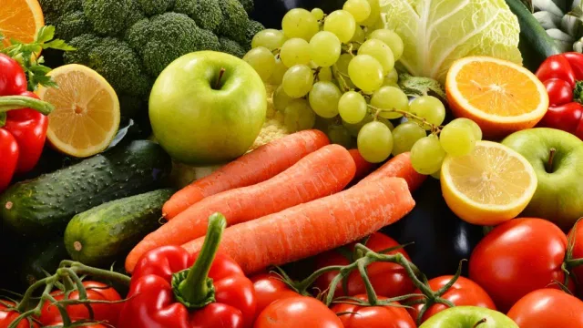

Healthy Eating Habits
A balanced diet which follows the daily recommended energy and nutrient intake range is desirable for chronic disease prevention and management. In the landscape of healthy eating there are many beliefs and dogmas, from vegan, Paleo, Mediterraneon, and raw food. For generations we have consumed varied diets native to all sorts of environments from all over the planet earth, from the arid Sahara desert to the Alp mountain of Europe which are covered in snow for most part of the year. Unfortunately much of what we eat today is not food in the traditional sense, as most of the food items we consume today is proocessed food often with artificial additives added in it such as preservative, color or for taste enhancement. In this blog I will briefly provide my recommendations on healthy eating habits, what kind of food should be eaten, in what quantities and which food should be avoided.
Eating meat for your daily protein requirement
It is well know that humans have domesticated sheep, cows and goats as far back as 10,000 BC. Humans have been eating meat for about as long as our species has existed. While protein may exist in virtually every food product, meat products have a relatively higher amount of protein. For example eating 100 grams of fish can provide approximately 20-30 grams of protein. The daily protein intake requirement for an adult can vary anywhere between 60 to 90 grams. Apart from providing protein, animal food are our only source of vitamin B12, which is essential for life itself. If you would like to read more about the effects of having meat in your diet, then I would recommend you to read this article published by the United Kingdom National Health Service.
Vegetables and Fruits
Eat locally grown organic fruis and vegetables. By growing vegetables and fruits organically helps eliminate water, air, andd soil toxicity and promotes biodiversity. The best way to find fresh local food is to grow it yourself! Be careful as many of the veggies consumed in America and Canada are genetically modified. Dont deep-fry your vegetables such as potatoes, instead it is better to bake them. One should eat at least seven to nine servings of fruits and vegetable daily. Scientific research has shown that eating a wide variety of food in our diet can lower the chances of stroke and breast cancer. The glycemic index (GI) is a scale which measures how much a particular food raises your blood sugar level - this model was first developed by scientist at Harvard University in . It is recommended to eat fruits with GI less than 11. Examples of such fruits include cherries and oranges. The Organic Council of Onatario is a an organization which aims to maintain integrity of organics products in Ontario.
Recommended Books
For those of you who would like to read more about this topic, the following are some of the useful recommended books on this subject:
- Hyman, M., 2018. Food: What the Heck Should I Eat?. Hachette UK.
- Willett, W. and Skerrett, P.J., 2017. Eat, drink, and be healthy: the Harvard Medical School guide to healthy eating. Simon and Schuster.